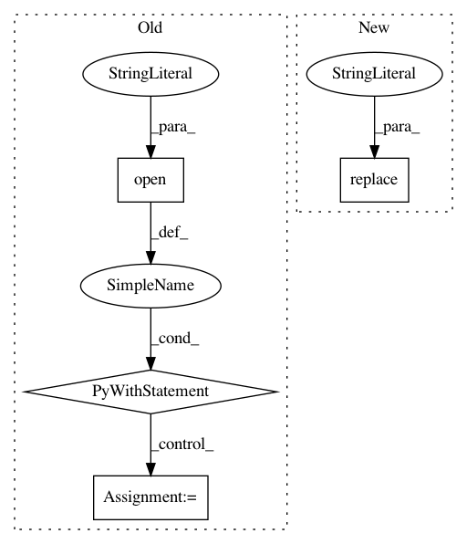

6b1035d56eca9b7af4abe1a81565667b0bf2fb47,io/eolearn/io/local_io.py,ExportToTiff,execute,#ExportToTiff#Any#,208
Before Change
dst_transform = src_transform
dst_width, dst_height = width, height
with rasterio.open(self._get_file_path(filename, create_dir=True), "w", driver="GTiff",
width=dst_width, height=dst_height,
count=channel_count,
dtype=image_array.dtype, nodata=self.no_data_value,
transform=dst_transform, crs=dst_crs,
compress=self.compress) as dst:
if dst_crs == src_crs:
dst.write(image_array)
else:
for idx in range(channel_count):
rasterio.warp.reproject(
source=image_array[idx, ...],
destination=rasterio.band(dst, idx + 1),
src_transform=src_transform,
src_crs=src_crs,
dst_transform=dst_transform,
dst_crs=dst_crs,
resampling=rasterio.warp.Resampling.nearest
)
return eopatch
class ImportFromTiff(BaseLocalIo):
After Change
if "*" in path:
for ts_idx, ts in enumerate(eopatch.timestamp, start=1):
path = path.replace("*", f"{ts.strftime("%d%b%YT%H%M%S)")}")
image_array = image_array[(ts_idx - 1) * channel_count:ts_idx * channel_count, ...]
channel_count = eopatch.shape[-1]
self._export_tiff(image_array, path if os.path.splitext(path)[-1] else path+".tif", channel_count,
dst_crs, dst_height, dst_transform, dst_width, src_crs, src_transform)
In pattern: SUPERPATTERN
Frequency: 4
Non-data size: 4
Instances
Project Name: sentinel-hub/eo-learn
Commit Name: 6b1035d56eca9b7af4abe1a81565667b0bf2fb47
Time: 2020-09-23
Author: william.ouellette@gmail.com
File Name: io/eolearn/io/local_io.py
Class Name: ExportToTiff
Method Name: execute
Project Name: emedvedev/attention-ocr
Commit Name: 441a33dbcade670c339285c1fa5ba70c885014ea
Time: 2017-10-26
Author: ckirmse@yahoo.com
File Name: aocr/model/model.py
Class Name: Model
Method Name: visualize_attention
Project Name: daavoo/pyntcloud
Commit Name: cdbe12c9ecc86fb54e6310d6aeab98edc6eba879
Time: 2017-05-02
Author: daviddelaiglesiacastro@gmail.com
File Name: pyntcloud/plot/points.py
Class Name:
Method Name: plot_PyntCloud
Project Name: emedvedev/attention-ocr
Commit Name: 8d1fa993ddc330d12636be23644b99cb777d8d72
Time: 2017-10-26
Author: ckirmse@yahoo.com
File Name: aocr/model/model.py
Class Name: Model
Method Name: visualize_attention